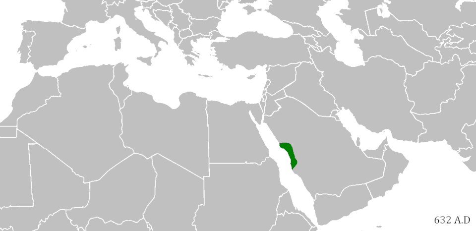

Introducció
Després de la caiguda de l’Imperi Romà d’Occident el 476, als límits orientals i meridionals del que havia estat l’imperi romà va néixer l’islam. En aquests territoris —sobretot a la Península Aràbiga—, la situació era molt diferent del que passava a Europa. No hi havia imperis forts, sinó tribus nòmades politeistes que vivien al desert, algunes ciutats comercials, com la Meca i grups de comerciants que travessaven el desert en caravanes per comerciar entre Àsia i el Mediterrani.
Al segle VII, va aparèixer l’islam, una nova religió monoteista predicada per Mahoma que ràpidament va obtenir el poder polític i militar. Després de la seva mort (632 dC), les tribus àrabs es van unir sota un mateix poder: els califes, considerats els seus successors. Els califes van crear un gran imperi en el qual es parlava l’àrab i que es va estendre ràpidament per Àsia, el nord d’Àfrica i part d’Europa.

